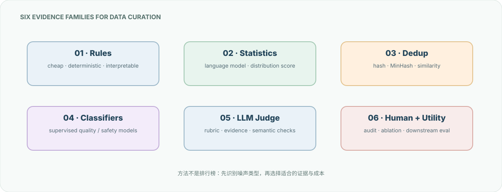
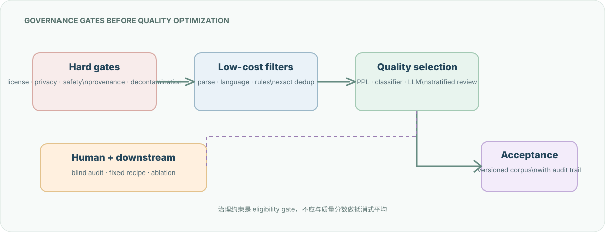

MODULE 25 / LLM DATA ENGINEERING
六大清洗范式对比
系统比较规则、统计、去重、分类器、LLM 评估与人工下游验证，建立可审计的组合式语料清洗策略。
面对一个数十亿文档的语料，应该用 C4 式规则、CCNet 式困惑度、MinHash、质量分类器、LLM judge，还是人工审核？答案通常不是“挑一个最先进的方法”，而是先识别噪声类型，再组合不同成本、不同误差结构的过滤器，并用人工审计和下游实验确认过滤到底有没有帮助。
六大范式：它们解决的是不同问题

| 范式 | 典型方法 | 强项 | 主要风险 |
|---|---|---|---|
| 1. 规则 / 启发式 | 长度、符号比例、占位符、URL、重复行 | 便宜、快、可解释、容易复现 | 阈值依赖语料；误杀新颖或非标准文本 |
| 2. 统计 / 分布评分 | 语言识别、n-gram perplexity、重复度统计 | 可排序、能捕捉分布异常 | 模型偏好会把稀有、专业或低资源文本误判为噪声 |
| 3. 精确 / 近似去重 | Hash、Bloom Filter、MinHash-LSH、SimHash | 减少重复曝光与存储浪费 | 近似相似不是语义等价；误删代表样本会损失覆盖 |
| 4. 监督分类器 | 质量、教育性、毒性、语言分类器 | 高吞吐，可学习复杂模式 | 标签噪声、域偏移、阈值校准和训练样本偏差 |
| 5. LLM / 语义评估 | Rubric judge、事实核验、语义相关性 | 能处理上下文和复杂标准 | 成本高、评分不稳定、偏好偏差、judge 与 generator 相关 |
| 6. 人工审计 + 下游实验 | 分层抽样、双人标注、固定 recipe 消融 | 检验真实误差与最终效用 | 昂贵、慢；若抽样框设计不当会有选择偏差 |
这六类方法的证据强度并不相同：规则输出的是确定条件是否触发；统计模型输出的是相对分数；分类器输出依赖标签定义的预测；LLM judge 输出依赖 rubric 和模型的判断；人工抽检提供有抽样设计的质量估计；最终下游训练实验才回答“这份数据在指定模型和预算下是否有用”。
代表性路线：C4、CCNet、DCLM 与 Dolma 给我们的启示

- C4 / T5：T5 论文介绍从 Common Crawl 构建 C4 时采用语言识别、启发式过滤、去重与不适当内容清理。它证明透明、可复现的规则流水线能构造大规模训练语料，但不意味着每条规则适用于所有语言和领域。
- CCNet：CCNet（LREC 2020）在标准去重和语言识别基础上，使用在高质量参考语料上训练的语言模型困惑度筛选与目标分布接近的网页文本。分数衡量的是相对语言模型匹配，不是“真理”或通用质量。
- DCLM：DataComp-LM（NeurIPS 2024）通过固定数据池、模型训练配方和多任务评测比较不同数据筛选方法，展示了受控下游评估的价值。论文中某种过滤器在其 benchmark 中领先，不代表它在所有领域都最优。
- Dolma：Dolma（ACL 2024）展示开放语料的构建文档、tagger、dedupe、mix 和 tokenization 工具链。透明的中间状态让研究者能比较策略，而不只看最终 token 数。
先执行不能被质量分抵消的硬门
许可 / 使用条件、隐私与敏感信息、明确的危险内容策略、评测集去污染、来源可追溯性，属于治理和数据契约约束，不应被混进“质量分数”里做加权平均。一个文档即使写得非常好，也不意味着它可以合法再分发或可以进入某个训练用途。
通过硬门后，再决定是否按质量、语言、领域和多样性进行排序或采样。过滤策略必须记录原始样本数、每阶段移除数、排除原因、剩余分布、抽检结果与版本，避免只公布最后一个保留率。
比较过滤器：不要只看 Accuracy
对人工抽检的二分类结果，至少报告 precision、recall 和 F1。若过滤器的正类定义为“应该移除”，高 precision 表示移除的样本大多确实应移除；高 recall 表示被判定应移除的样本较少漏掉。实际使用时还要报告被保留数据的分布变化，因为相同 F1 可能造成完全不同的语料偏移。
其中 TP 是正确识别的待移除样本，FP 是被误判为待移除的好样本，FN 是漏掉的噪声样本。若错误代价不对称，应该按业务损失选择阈值，而不是默认最大化 F1。
交互实验：从抽检混淆矩阵计算 Precision / Recall / F1
# scripts/cleaning_metrics.py
from scripts.cleaning_metrics import precision_recall_f1
print(precision_recall_f1(tp=800, fp=100, fn=200))一个稳健的组合策略
- 不可协商的治理门：来源与使用条件、隐私、明确的安全政策、评测去污染。
- 低成本预处理：解析、编码修复、空文档、格式、语言与基本启发式。
- 重复控制：先精确去重，再按任务需要引入近似去重；保留簇和代表样本理由。
- 质量排序：统计评分或分类器用于大规模排序；对长尾领域单独校准阈值。
- 语义与人工抽检：把高风险、低置信和新分布样本送入更昂贵的 judge / 人工流程。
- 受控下游评估：固定模型规模、token budget、tokenizer、训练步数和评测集，比较过滤前后与不同策略消融。
参考资料
- Raffel et al. (2020), Exploring the Limits of Transfer Learning with a Unified Text-to-Text Transformer，C4。
- Wenzek et al. (2020), CCNet: Extracting High Quality Monolingual Datasets from Web Crawl Data，LREC 2020。
- Li et al. (2024), DataComp-LM，NeurIPS 2024。
- Soldaini et al. (2024), Dolma，ACL 2024。
- Long et al. (2024), On LLMs-Driven Synthetic Data Generation, Curation, and Evaluation: A Survey。
- Datasets for large language models: a comprehensive survey，2025。
- Inter-Annotator Agreement in NLP，AACL 2026。